設定 Pi Desktop，啟動 Node。
從 Windows 環境準備、Pi Desktop 與 Docker，到路由器 Port 設定及節點狀態檢查，按步驟完成。
PI DESKTOP · NODE STATUS (示意) Node ● 已啟動 Docker ● 運作中 同步 ● 進行中 Port ● 以 App 檢查 實際狀態請查看 Pi Desktop
01 · 事前準備
先確認電腦、網路與軟體環境，再開始安裝，可以少走很多彎路。
Windows 電腦
如果你使用 Windows，建議先完成系統更新，並準備管理員權限，以便安裝 Pi Desktop 與 Docker。
穩定網路
Node 需要持續與網路通訊。若使用 Wi‑Fi，建議讓電腦固定連線；有條件時可優先使用有線網路。
磁碟與資源
Linux Node 官方起始需求為 150GB 磁碟、4 vCPU、4GB RAM，建議預留 300GB；另需近期 Debian 系 Linux、Docker Engine 與 Docker Compose v2。Windows 需求請以 Pi Desktop 實際檢查為準。
Docker 官方下載
Pi Node 的部分環境會用到 Docker。請只從 Docker 官方網站下載，避免使用第三方重包安裝檔。
02 · Windows 安裝流程
以下按順序完成 Windows 環境、Pi Desktop 登入與 Node 初始化；Port 設定及故障排除列於後續章節。
下載並安裝 Pi Desktop
只從 Pi Network 官方網站取得安裝檔。安裝完成後開啟 Pi Desktop，從 Node 頁面開始登入及設定。
依 Pi Desktop 的提示完成初始化
在 Pi Desktop 的 Node 頁面完成環境與容器設定。不要自行混用舊版教學中的 Docker 設定檔。
啟動 Node 並觀察同步
完成初始化後，依 Pi Desktop 的提示開啟 Node。Docker 容器及狀態以目前 App 與 Docker 顯示為準。
按 App 提示設定 Port
Pi Node 0.6.2 起支援相容路由器的 UPnP 自動設定。若 App 顯示仍需手動設定，再依後面的路由器與防火牆章節操作。
從電腦準備到進入 Node 頁面
以下補上 Windows 與首次登入細節。配圖取自參考安裝教學 ↗；部分是 Windows 10 與舊版 Pi Desktop 畫面，只作位置示意。介面可能更新，請以目前 Pi Desktop 與官方安裝提示為準。
先確認 CPU 虛擬化已啟用
在工作管理員的「效能 → CPU」查看虛擬化狀態。若未啟用，依主機板廠牌與型號查詢 BIOS/UEFI 設定並開啟 Intel VT-x 或 AMD-V。可在 CMD 執行 wmic baseboard get product,Manufacturer 查主機板資訊；新版本 Windows 若沒有 WMIC，可改用系統資訊或 PowerShell 查詢。
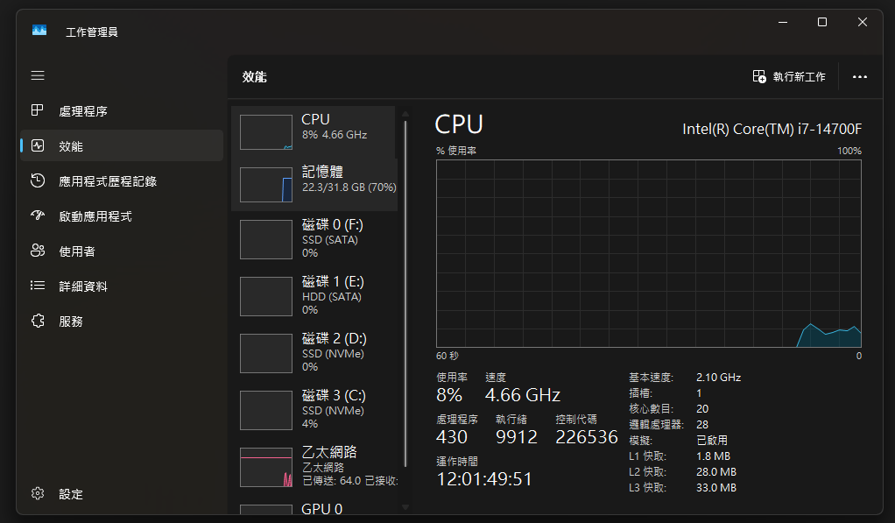
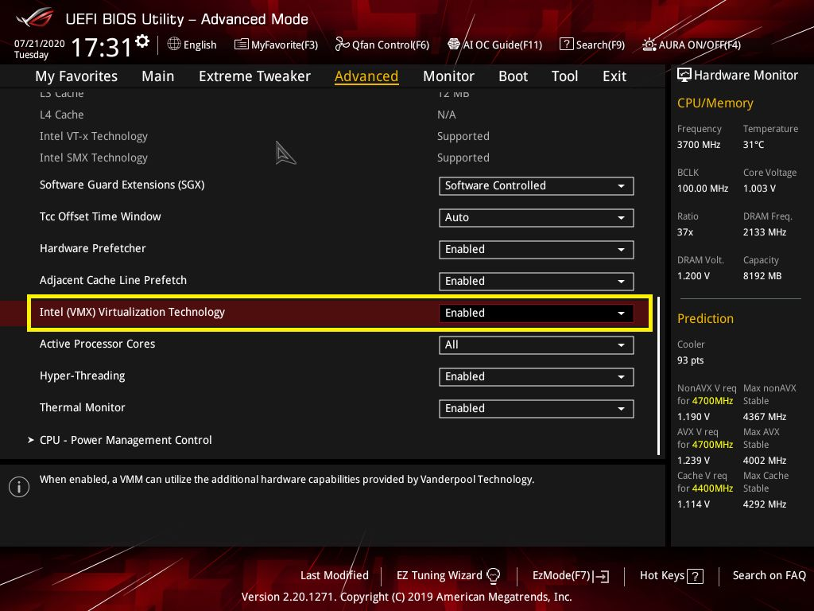
安裝並更新 WSL 2
在 Windows 搜尋「開啟或關閉 Windows 功能」，啟用「適用於 Linux 的 Windows 子系統」與「虛擬機器平台」，按確定並依提示重新啟動。Docker Desktop 若提示安裝／更新 WSL，請照提示完成。新版 WSL 可在 PowerShell 執行更新指令；若使用舊版 WSL 或系統要求安裝核心套件，從 Microsoft 官方頁面下載與電腦架構相符的 x64 或 ARM64 套件，執行安裝程式並按 Finish 完成。
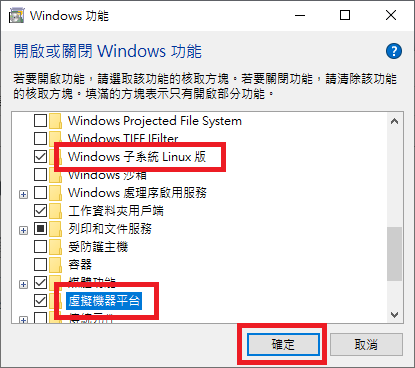
wsl --update在 PowerShell 或 CMD 執行；若系統提示重新啟動，請先重新啟動電腦。
從 Microsoft 說明頁選擇與 Windows 架構相符的 WSL2 核心更新套件（x64 或 ARM64），下載後執行 MSI 並完成安裝。不要只依照檔名猜架構。
舊版 x64 套件直連：aka.ms/wsl2kernel ↗
wsl --set-default-version 2在 Windows PowerShell 或 CMD 執行，不是在 Linux/WSL 終端機執行。此設定只影響之後新安裝的 Linux 發行版；已安裝的發行版需另外轉換。
Microsoft 目前建議使用新版 WSL 更新方式；手動 MSI 是舊版或安裝程式要求時的替代流程。若不確定架構，可在「設定 → 系統 → 關於」查看系統類型。WSL 指令說明 ↗
完成 Docker 初次啟動
依 Docker Desktop 安裝程式完成安裝。若安裝程式要求登出或重新啟動，照提示操作；首次開啟時接受服務條款並等待 Docker 啟動完成。若出現教學可略過，之後讓 Docker 在背景保持執行。Docker 狀態未正常前，先處理 Docker 顯示的錯誤再啟動節點。
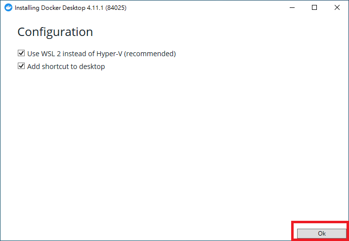
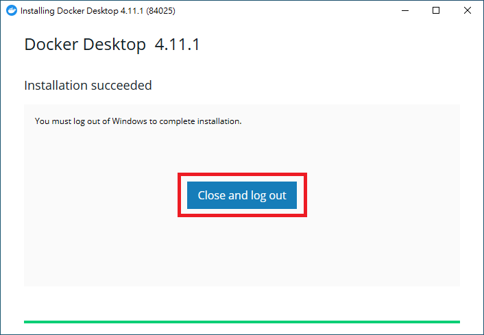
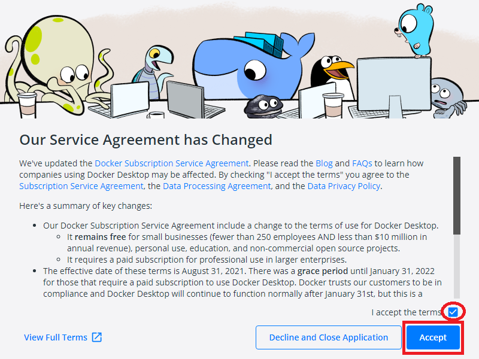
登入 Pi Desktop 並完成首次申請
Pi Desktop 安裝完成後按「LOGIN」，依畫面產生的登入碼在手機 Pi App 輸入／確認。回到電腦端進入「Node」並按「APPLY」。首次設定若出現問卷，填完按「SUBMIT」；送出後按返回，再按「CONTINUE」繼續。登入碼是個人登入憑證，請勿分享或截圖公開。
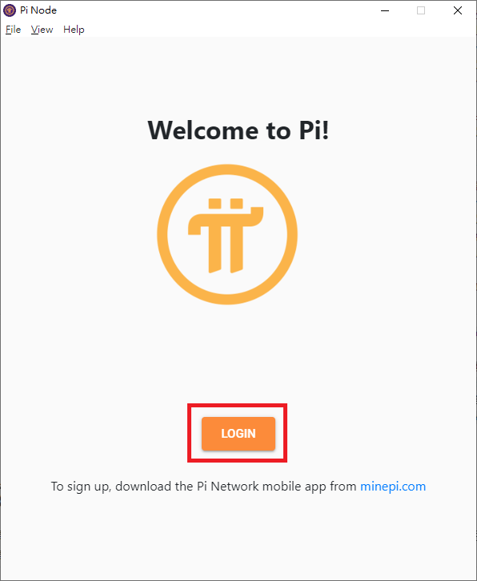
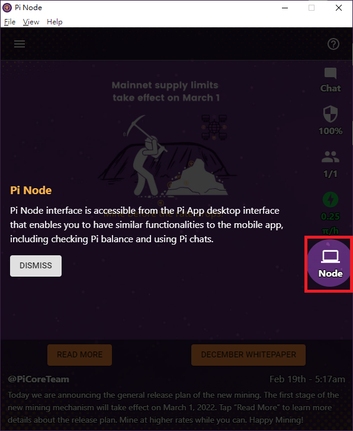
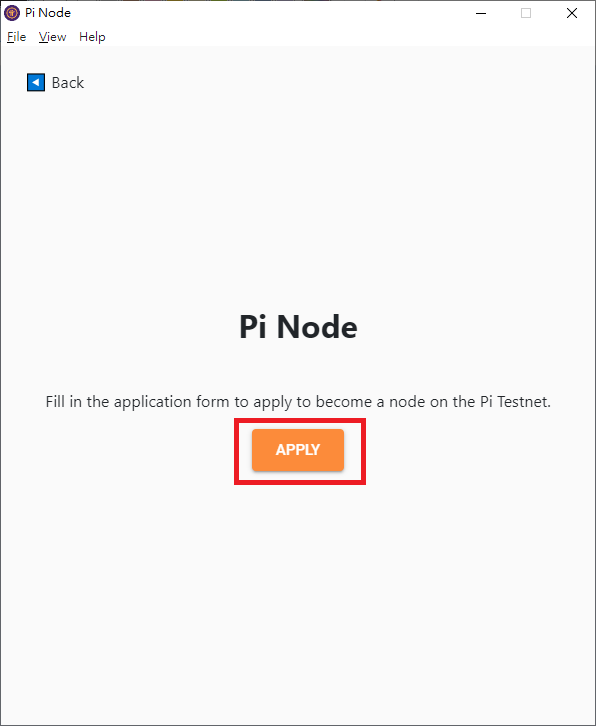
確認 Docker 狀態，再啟動 Node
若 Node 頁面的 Docker 狀態未顯示正常，先排除 Docker 問題。依 App 顯示的步驟處理連線設定，再開啟 Node 主開關。Pi Desktop 會依目前流程啟動所需容器；舊版畫面曾使用 pi-consensus 名稱，實際狀態與容器名稱請以目前 App 為準。
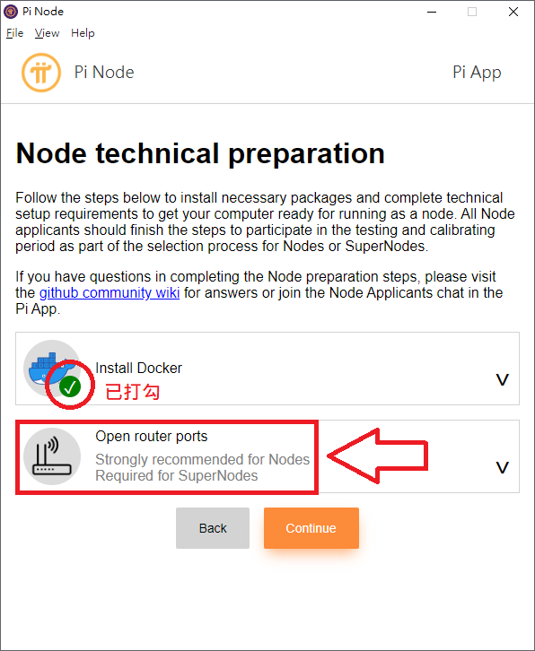
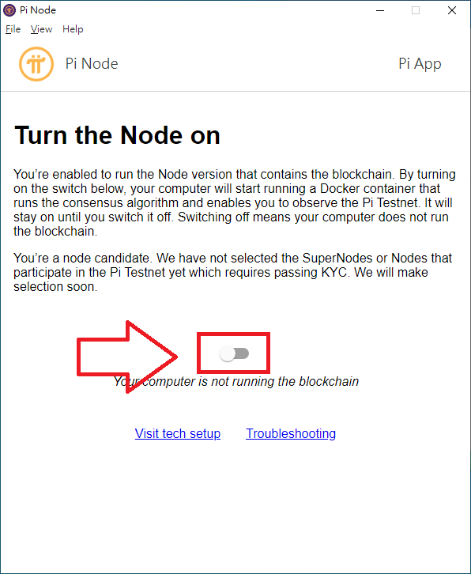
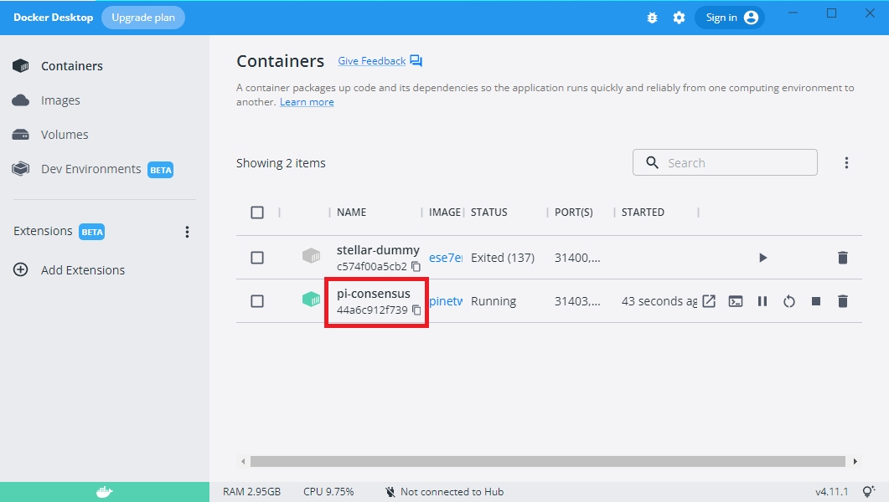
讓節點持續執行並查看同步進度
節點開關保持開啟，視窗可縮小或關閉，App 仍可在背景執行；關閉開關會停止節點容器。區塊同步需要時間，可查看 同步進度說明 ↗。若新安裝後卡在啟動／轉圈畫面，先看 轉圈問題排除指南 ↗，並核對其適用版本。
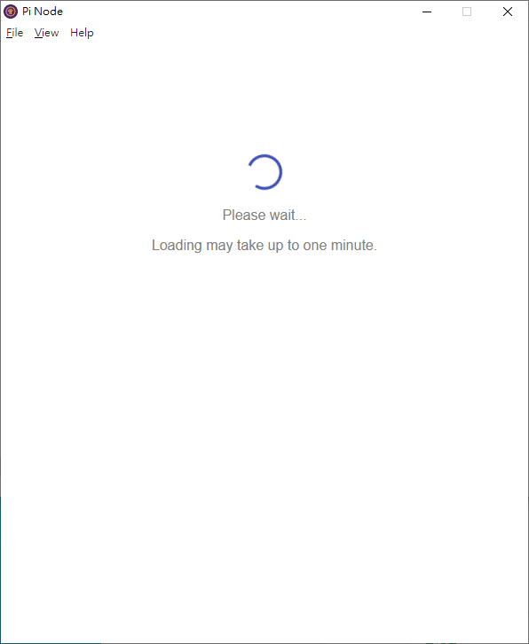
舊版測試方式：參考教學中的「Check now」曾透過 Docker 建立 stellar-dummy 測試容器。這不等同目前 Pi Desktop 的 UPnP 自動設定與 Port Checker；不要同時執行舊版測試容器和 Node 容器。若仍依舊版步驟測試，請先確認 App 與說明適用於你的版本，並依 Pi Desktop 畫面決定是否允許防火牆連線。外部網站測試結果也會受網路環境影響，應以目前 App 的診斷為準。
03 · 進入路由器後台
若 Pi Desktop 指示需要手動設定，再用 Windows 找到 Default Gateway，進入路由器管理頁面。
開啟 Windows Terminal / CMD
按 Win + R → 輸入 cmd → Enter。
查詢 Default Gateway
輸入下面指令，找你目前網卡的 Default Gateway。
ipconfigEthernet adapter Ethernet:
Connection-specific DNS Suffix . :
Link-local IPv6 Address . . . . . : fe80::1f07:2eaa:156e:ea95%15
IPv4 Address. . . . . . . . . . . : 192.168.213.100
Subnet Mask . . . . . . . . . . . : 255.255.255.0
Default Gateway . . . . . . . . . . : 192.168.213.1
The highlighted Default Gateway is an example. Find this line in your own ipconfig output and use its address; the IP shown above is illustrative.
在瀏覽器輸入 Gateway
例如你的 Default Gateway 是 192.168.213.1，就在網址列輸入：
http://192.168.213.1登入路由器管理介面
輸入路由器管理帳號與密碼。帳密通常可在機身貼紙、ISP 文件、安裝資料或你自己設定的密碼管理工具中找到。
尋找 Port Forwarding
不同品牌名稱可能不同，常見關鍵字：
進入後台後，先不要亂改設定
你真正要找的是「NAT／Port Forwarding」。通常不需要修改 WAN、DHCP、PPPoE 或其他進階網路設定。
04 · Windows 防火牆
只有在 Pi Desktop 指示需要，或確認連線遭防火牆阻擋時，才建立入站規則。以下畫面是操作示意。
新增 Pi Node 入站連接埠規則
按 Win + R，輸入 wf.msc 開啟「Windows Defender 防火牆（進階安全性）」。以下依序在精靈中選擇設定。
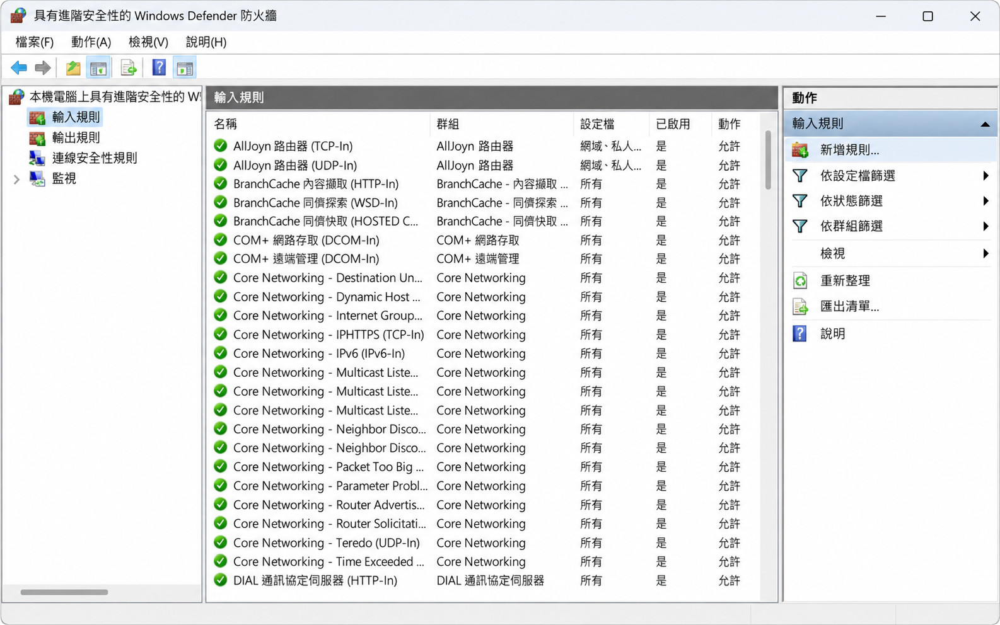
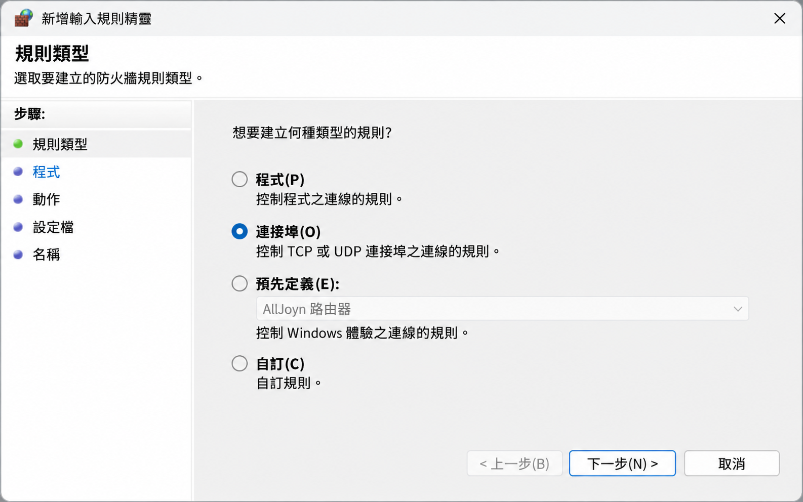
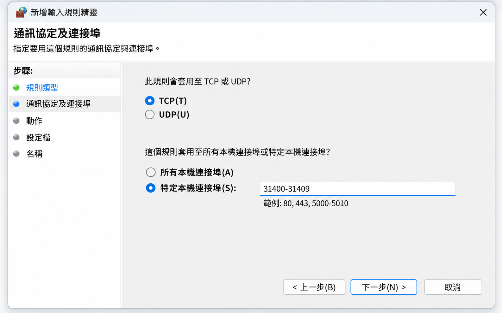
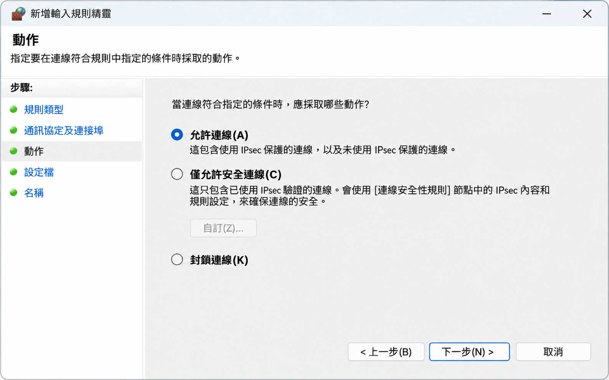
05 · Port 設定
0.6.2 起支援相容路由器的 UPnP 自動設定。歷史教學中的 Port 範圍僅供參考，請以 Pi Desktop 當前顯示為準。
舊版教學常見的 Port 範圍
先查看 UPnP 狀態
0.6.2 起，支援且啟用 UPnP 的路由器可讓 Pi Desktop 自動設定所需連線。依 App 提示查看設定結果。
需要時手動轉發
只有在 UPnP 不支援或 App 仍提示設定時，才將 App 指定的 Port 轉發到執行 Pi Desktop 的電腦區域網路 IP。
用 App 驗證
完成後回到 Pi Desktop 的 Port Checker 查看結果；不要把網頁上的示意數字當成即時狀態。
依照你提供的 Hitron 畫面填寫
下方重現截圖中的欄位和值，讓你可以逐項對照。Port 範圍與通訊協定只在 Pi Desktop 仍要求手動開放、且目前 App 顯示相同設定時照此填寫；路由器欄位名稱可能因型號或韌體不同而異。
-SERVICES-Pi Node PortsTCP/UDP31400 – 3140931400 – 31409192.168.213.100AnyPublic Port 是外部連入的 Port；Private Port 是轉送到電腦的內部 Port。截圖中兩者設成相同範圍；Remote IP「Any」代表不限制來源 IP。
06 · 啟動後檢查
完成安裝與 Port 設定後，確認節點正在運作，再留意同步狀態。
07 · 常見排錯
先看現象，再判斷是 Port、Docker、同步或網路問題。
Port 顯示沒有開，是不是 Node 一定不能跑？
不一定。Port 狀態與節點對外連入能力有關；先查看 Pi Desktop 的 Port Checker 和診斷資訊，再確認路由器、Windows 防火牆、UPnP 與實際 LAN IP。
Node 容器沒有跑起來怎麼辦？
先確認 Docker Desktop 正常運作，再依 Pi Desktop 的診斷提示處理。若持續出現容器錯誤，記錄錯誤訊息並查看官方支援與 Wiki 的排查說明。
一直顯示同步中，是壞掉了嗎？
同步本身可能需要時間。先觀察 Local Block / Latest Block 是否有變化，以及 Incoming / Outgoing Connections 是否逐步建立。若長時間完全不變，再進一步查看網路與 Docker 狀態。
下載 Node 時看到 Windows SmartScreen 警告怎麼辦？
Pi 官方說明指出，新的網路下載軟體可能觸發 Microsoft Defender SmartScreen 提示；請先確認下載來源確實為 Pi Network 官方網站，再依你的 Windows 安全設定作決定。